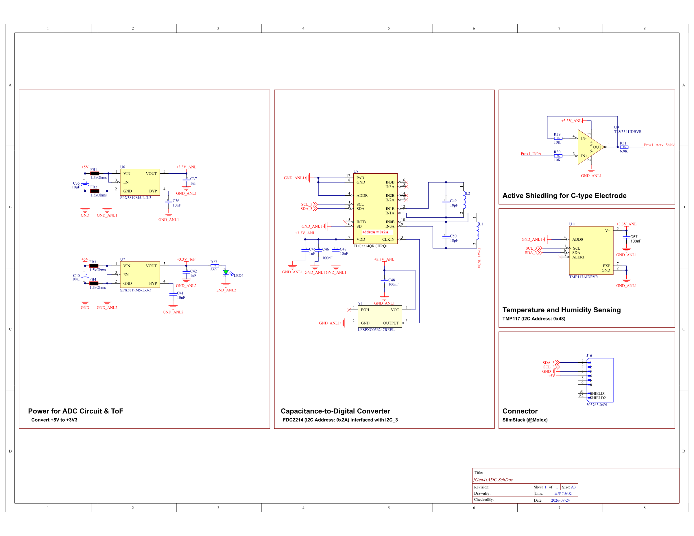
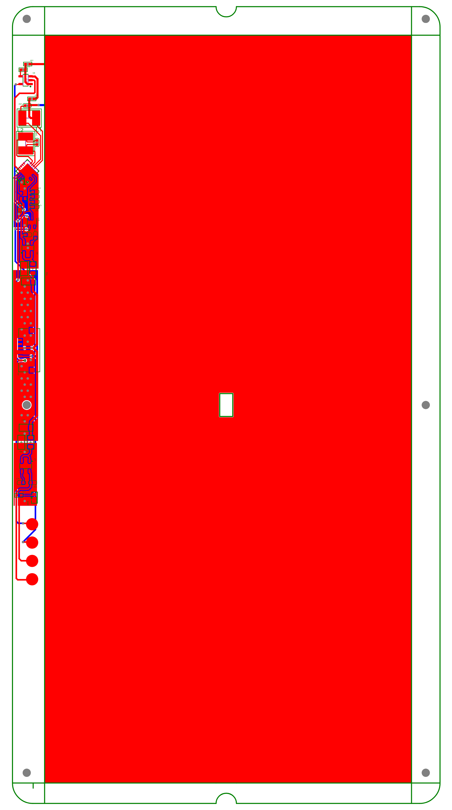
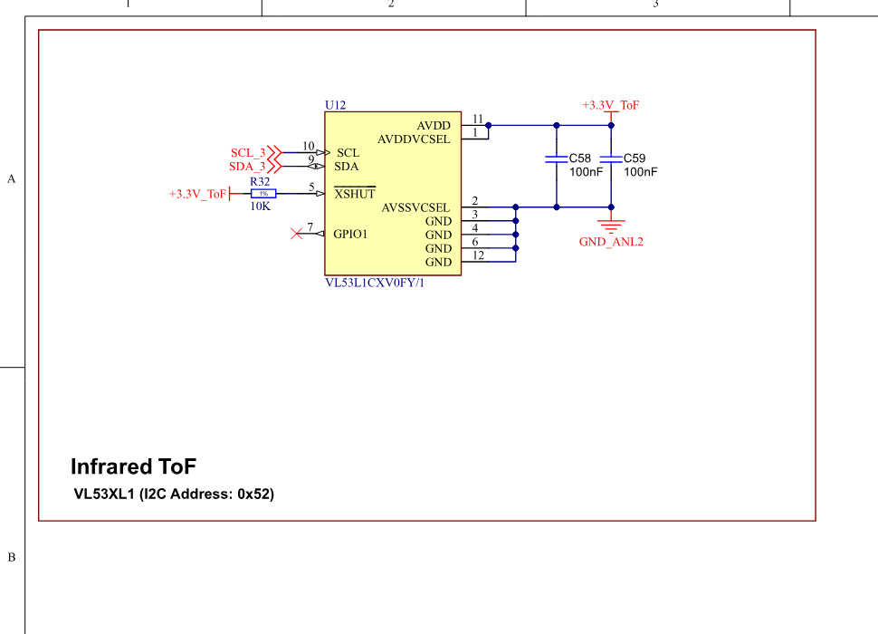
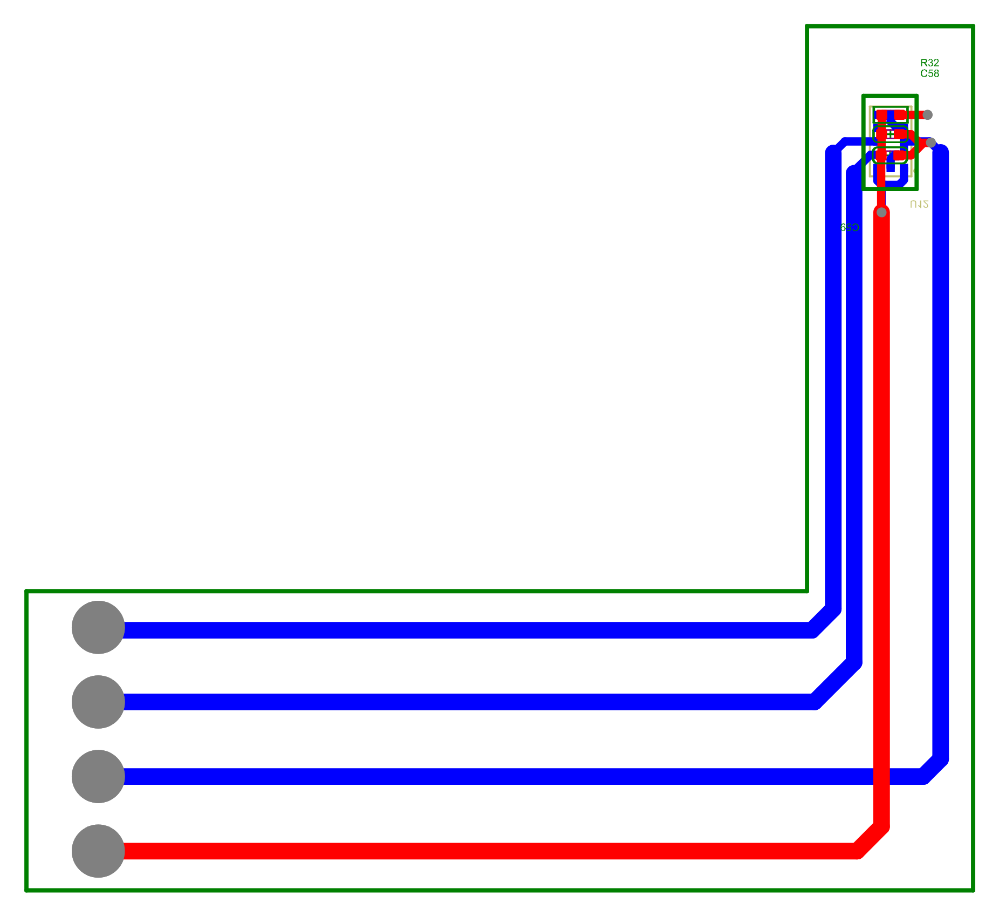
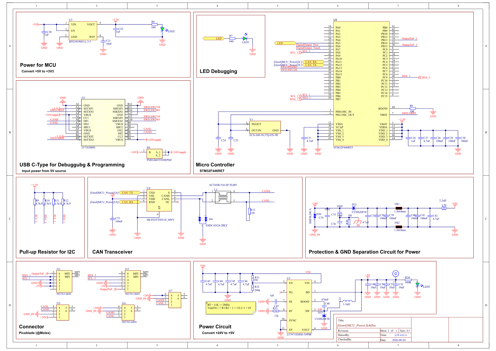
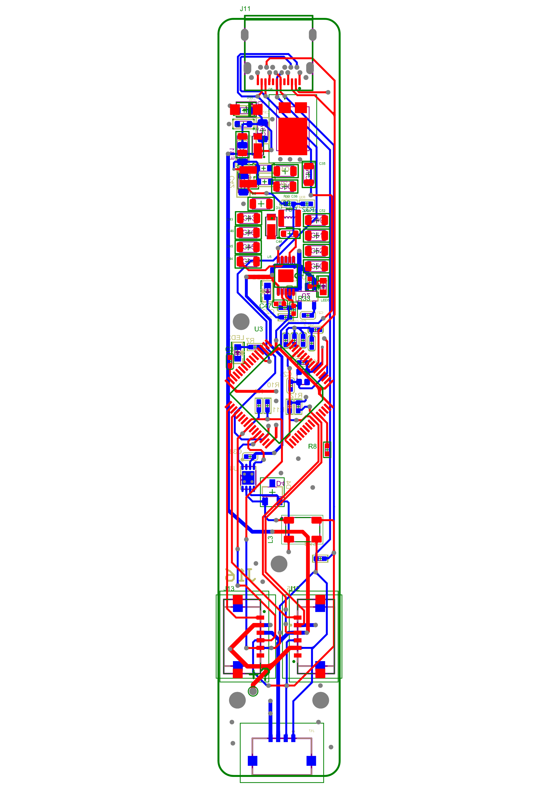

전기적 구성
PCB 및 임베디드 전자회로
정전용량 측정, 중앙 ToF 인터페이스, MCU 기반 데이터 수집, 전원 변환, CAN 통신을 각각의 기능 블록으로 구성했습니다.
Implementation Evidence
보드 구현 상세
Capacitive sensing
ADC 센싱 회로
FDC2214 정전용량 측정 · 전원 · Active Shield

원본 PDF ↗
원본 PDF ↗Direct ranging
ToF 인터페이스
VL53L1CX 거리 측정 · I2C 인터페이스

원본 PDF ↗
원본 PDF ↗Embedded control
MCU 및 전원 회로
데이터 수집 · 전원 변환 · CAN 통신

원본 PDF ↗
원본 PDF ↗Board Specifications
보드별 핵심 사양
| Board | Main IC | PCB | Interface | Implementation |
|---|---|---|---|---|
| Capacitive Sensor | FDC2214 | 2 Layer | I²C | Single-ended electrode · Active Shield |
| ToF Sensor | VL53L1CX | 2 Layer | I²C | 중앙 센서 배치 · 직접 거리 입력 |
| MCU / Power | STM32F722RET | 4 Layer | I²C · CAN | 100 Hz · 12 V → 5 V → 3.3 V |
System Architecture